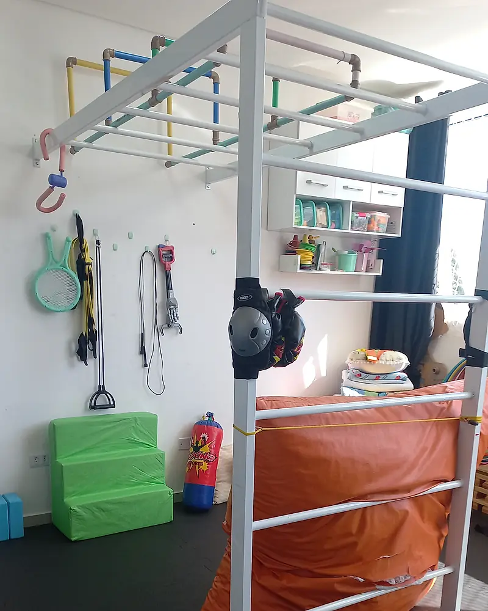
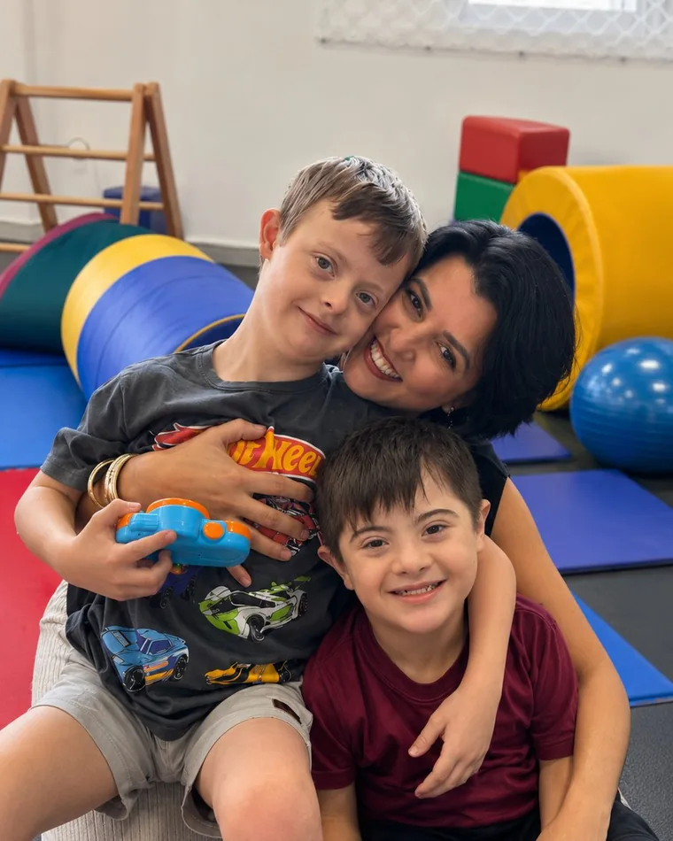
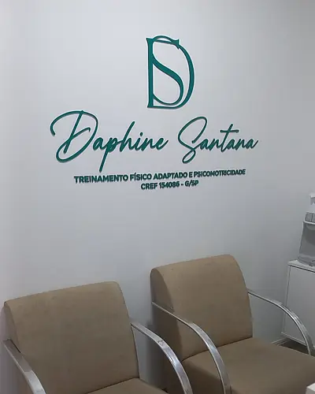
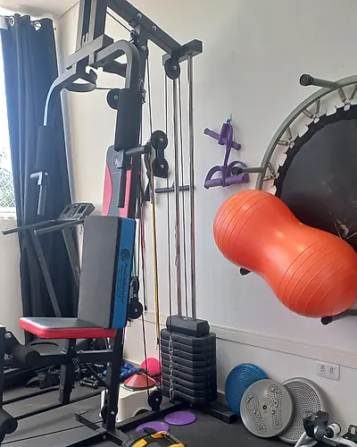
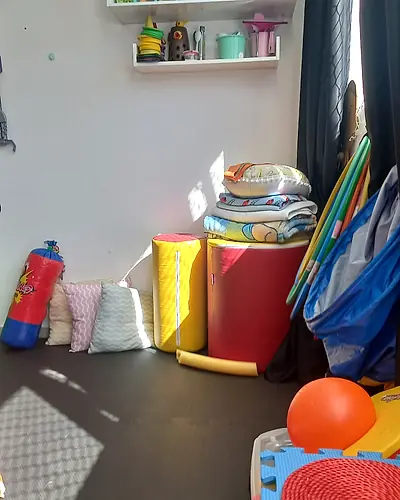
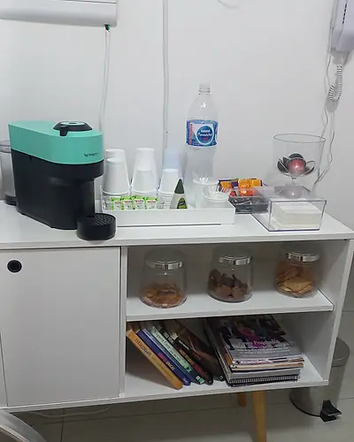
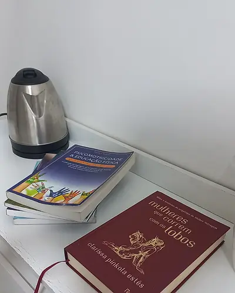

Cada conquista do seu filho começa no movimento.
Avaliação e acompanhamento em psicomotricidade, intervenção precoce e psicomotricidade aquática, com plano individual, na clínica em Mogi das Cruzes ou no conforto da sua casa, em todo o Alto Tietê.

Você percebe algum destes sinais no seu filho?
Quanto antes a família busca orientação, mais leve e eficaz é o caminho. Confiar na sua intuição de mãe ou pai já é o primeiro passo.

- Atraso para sentar, engatinhar, andar ou falar
- Dificuldade de coordenação, equilíbrio ou postura
- Sensibilidade intensa a sons, texturas ou toques
- Dificuldade de atenção, interação ou comunicação
- Suspeita de TEA, TDAH ou atraso no desenvolvimento
- Desafios de aprendizagem ou comportamento na escola
Conversar agora“Você não está só. Existe um caminho, e ele começa com uma conversa.”

Entenda como o movimento ajuda seu filho a se desenvolver.
A psicomotricidade cuida do desenvolvimento global da criança, integrando corpo, mente e emoção. É pelo movimento, pela brincadeira e pelo vínculo que a criança aprende, se organiza e ganha autonomia.
Cada sessão é planejada a partir de uma avaliação cuidadosa, respeitando o tempo, a energia e as necessidades únicas de cada criança. Sem protocolos prontos, sem pressa: cuidado de verdade.
Dimensões trabalhadas: motor, cognitivo, emocional e social.
Três passos para começar.
Sem burocracia, com cuidado desde a primeira mensagem.
-
Conversa pelo WhatsApp
Você conta o que tem observado. Sem compromisso e sem julgamento: já nessa conversa eu te oriento.
-
Avaliação inicial
Um encontro na clínica ou na sua casa para conhecer a criança com calma e escutar a família.
-
Plano personalizado
Você recebe um plano claro, com objetivos reais e a frequência que faz sentido para a rotina da família.
Sete frentes de cuidado, uma mesma escuta.
Cada especialidade recebe a mesma atenção: avaliação cuidadosa, plano individual e a família acompanhando de perto.
-
Psicomotricidade
Mais procurado
Desenvolvimento global (motor, cognitivo e emocional) trabalhado pelo corpo e pela brincadeira.
Para todas as idades -
Avaliação Motora Infantil
Diferencial na região
Um olhar técnico e sensível sobre os marcos motores, com devolutiva clara para a família.
Intervenção precoce -
Treinamento Físico Adaptado
Atendimento especializado
Atividade física individualizada para diferentes idades, necessidades e fases da vida.
PCD, autistas, lesionados -
Psicomotricidade Aquática
A água potencializa a regulação sensorial, a coordenação e o vínculo. Raro de encontrar por aqui.
Sob indicação na avaliação -
Intervenção Precoce
Estimulação especializada para bebês e crianças pequenas, na fase mais decisiva do desenvolvimento.
Primeiros anos de vida -
Gerontopsicomotricidade
Cuidado psicomotor para a pessoa idosa, preservando autonomia, vitalidade e qualidade de vida.
Cuidado para a 3ª idade -
Acompanhamento Nutricional
Orientação nutricional integrada à rotina da família e ao plano de cuidado.
Integrado ao plano
Não sabe por onde começar? A avaliação inicial indica o melhor caminho para o seu filho.
Pedir orientaçãoDaphine Santana
Psicomotricista · CREF 154086-G/SP
O Espaço Daphine Santana nasceu para cuidar do desenvolvimento e da qualidade de vida de forma integral, reunindo psicomotricidade, intervenção precoce, treinamento físico adaptado e acompanhamento especializado em um só lugar.
Aqui, cada criança e cada família é recebida com técnica, escuta e presença. O atendimento acontece na clínica em Mogi das Cruzes ou na sua casa, em todo o Alto Tietê: onde for mais confortável e seguro para você.
- Plano 100% individual
- Cada acompanhamento nasce de uma avaliação atenta. Nada de protocolos prontos: o plano é da sua criança.
- Na clínica ou na sua casa
- Sessões em Mogi das Cruzes ou no conforto do lar, em todo o Alto Tietê. Você escolhe.
- Olhar multidisciplinar
- Psicomotricidade, intervenção precoce, treino adaptado e mais, sob um mesmo cuidado integrado.
- Psicomotricidade aquática
- Um diferencial raro na região: o trabalho psicomotor potencializado pelo meio aquático.
Cooperados CoopMed contam com condições especiais em serviços selecionados.
Conversar com a DaphineO que as famílias dizem.
Ver avaliações no Google“Profissional competente e humana. Super indico seu trabalho, pois percebi grandes avanços no desenvolvimento motor do meu filho, bem como na fala e linguagem.”
“Daphine é uma excelente profissional! Muito eficaz no que faz, atenciosa e dedicada. Com certeza, recomendo o trabalho dela!”
Um ambiente pensado para acolher e estimular.
Da recepção à sala de psicomotricidade, cada detalhe foi preparado para que crianças e famílias se sintam seguras, à vontade e bem cuidadas.

Recepção acolhedora- Sala de psicomotricidade

Treino físico adaptado
Cantos lúdicos
Cuidado com a família
Estudo contínuo
Atividades, bastidores e orientações sobre desenvolvimento infantil: acompanhe o dia a dia do espaço no Instagram.
@daphine.santanaPerguntas que as famílias fazem.
Como funciona a avaliação inicial?
Vocês atendem em casa? Em quais cidades?
O que é psicomotricidade aquática e quando é indicada?
Quanto tempo dura o acompanhamento?
Atende convênios?
Como faço para agendar?
Na clínica em Mogi ou na sua casa, no Alto Tietê.
Atendimento em casa
O atendimento domiciliar cobre todo o Alto Tietê e cidades vizinhas. Você escolhe onde é mais confortável para a sua família.
- Mogi das Cruzes
- Suzano
- Poá
- Itaquaquecetuba
- Ferraz de Vasconcelos
- Arujá
- Guararema
Clínica em Mogi das Cruzes
R. Manuel de Oliveira, 269
Torre 2, Sala 107
Helbor Dual Patteo Mogilar · Vila Mogilar, Mogi das Cruzes – SP
Abrir no Google MapsO próximo passo do seu filho pode começar hoje.
Uma conversa no WhatsApp já traz mais clareza e direção. Sem compromisso, sem julgamento: só acolhimento e informação.
Agendar pelo WhatsAppResposta rápida · atendimento humano · Mogi das Cruzes e todo o Alto Tietê